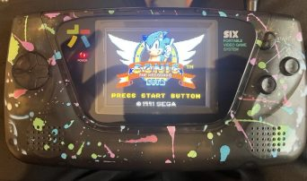

Our Work
Atari Lynx with BennVenn Screen Mod

Sega Game Gear with Retro Six Clean Screen
Inside an Atari Lynx during repair

Inside a Sega Game Gear during repair
Sega Game Gear with copper shielding
Our dedicated repair workspace